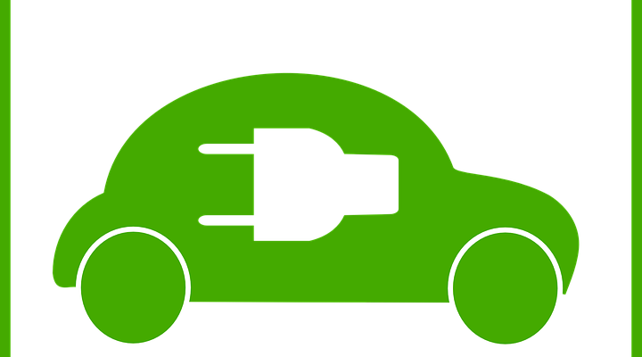

Développement durable : Les solutions possibles grâce aux systèmes d'information
En effet, il y a beaucoup de solutions à évoquer dans la problématique liée au développement durable, cependant, je trouve pertinent de proposer des solutions
nous touchent directement.
Les systèmes d'information, symboles modernes de l'évolution, nous permettent de vivre plus confortablement, de réaliser des tâches plus rapidement, cependant ils posent
également des problèmes au niveau écologique.
C'est la raison pour laquelle je propose des solutions impliquant l'utilisation des systèmes d'information au service du développement durable.
Cette solution peut paraître atypique, mais elle est à prendre au sérieux.
Très peu populaire en France, voire même un échec, le télétravail est mal vu, contrairement aux Etats unis, où 4 millions de salariés travaillent en plein temps en télétravail, ce qui permet de réduire d’environ 2 millions
le nombre de véhicules circulant chaque jour, et donc indirectement la pollution, en effet s’il y a moins de véhicules qui circulent, moins de véhicules produisent du C02 nocif pour notre planète, le télétravail participe donc au développement durable,
et ceci est possible grâce à la technologie.
Une des solutions possibles impliquant le renforcement du développement durable serait de former les employés et d’encourager le télétravail.
La mobilité et véhicules éco-responsables ?

Deux solutions sont ici proposées :
Une solution à court terme :
Celle-ci consiste à sensibiliser la population mondiale à l'utilisation des transports en commun ou au covoiturage, ainsi que l'utilisation de véhicules
non-polluants (vélos, skates, trottinettes etc...)
Une solution à long terme :
Les technologies de l’information et de la communication permettent d’améliorer l’efficacité énergétique dans des bâtiments intelligents.
Elles permettent d’informer, de mobiliser, de prévoir, d’étudier, de faire collaborer, de comprendre… et d’agir.
Par exemple réduire la consommation de gaz avec le chauffage et rendant l’isolation thermique du bâtiment intelligente, cela permet au propriétaire de visualiser ou réduire sa consommation et donc le gaspillage et la pollution.
La création de véhicules éco-résponsables est également une partie de la solution, ils permetteraient de réduire voire même supprimer la pollution (sauf celle liée à leur construction).
D’après une étude de l’ADEME sur les impacts des différents types de commerce. Si le commerce de proximité est le moins impactant, surtout s’il propose des produits frais et locaux, il y a une énorme différence entre le supermarché et la commande sur Internet, de l’ordre de 10 fois plus de gaz à effet de serre émis, de bruit, de surface consacrée au commerce…
Une solution possible à ce problème serait de mettre en commun des livraisons, une sorte de transport en commun de la livraison, cela réduirait la consommation, les déplacements et les coûts.
L’intervention des systèmes d’information se fait au niveau des commandes sur internet.
Les avancées technologiques peuvent être également bénéfiques dans l’agriculture, cela peut apporter une aide cruciale aux États les plus pauvres.
L’internet des objets utile pour améliorer les techniques d’agriculture et la gestion de l’eau, l’Internet par satellite, pour faciliter l’accès dans les régions éloignées, et l’utilisation des chaînes de blocs,
pour simplifier l’organisation dans les camps de réfugiés.
Ainsi que la création d’un récent robot nommé Ladybird conçu au royaume-uni, un robot agriculteur fonctionnant à l’énergie solaire, il permettrait de résoudre beaucoup de problèmes liés à l’agriculture.